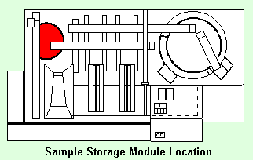
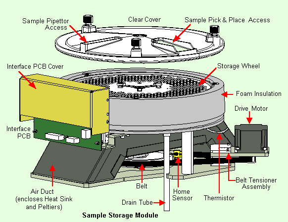
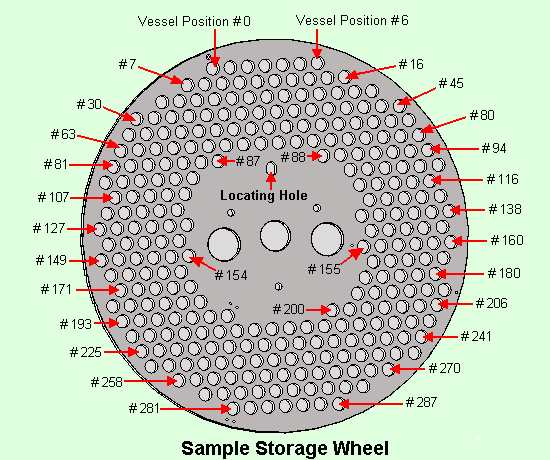
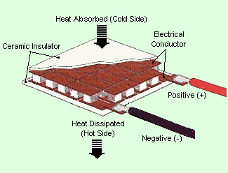
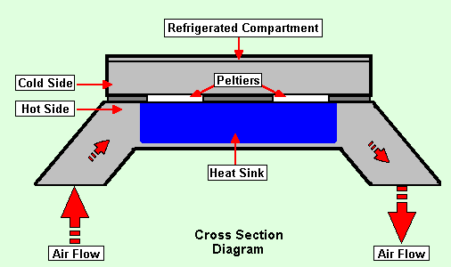

Sample Storage Module Operating Principles
Purpose
This document details the operating principles for the sample storage module.
Module Function
The sample storage module positions vessels for the sample pipettor to dispense samples and for the sample pick-and-place to transfer sample to the reagent carriages for continued processing. Vessels with sample are kept chilled in the sample storage module for possible use later, such as for delayed testing or reflex testing. The on-board sample fluid storage allows automatic reflex testing without having the sample transport container returned to the instrument.
Location

Operational Overview
| Step | Action |
|---|---|
| 1 | The Peltiers cool the sample storage module. |
| 2 | Main instrument blower pushes air into the air duct, across the heat sink, and out the air duct. |
| 3 | Storage wheel rotates and accepts an empty vessel from the sample pick-and-place. |
| 4 | Storage wheel rotates and positions the empty vessel for sample transfer by the sample pipettor. |
| 5 | Storage wheel rotates and positions the SV for the sample pick-and-place to pick up the SV and move it to:
|
| 6 | To return a sample vessel, the storage wheel rotates and the sample pick-and-place delivers the SV into the original position on the sample wheel.
Note: Sample vessels can be kept in chilled storage for possible use later, such as for delayed or reflex testing.
|
Component Locations

Component Functions
| Part | Function |
|---|---|
| Belt | Transfers motor motion to rotate storage wheel. |
| Cover, Clear | Reduces air infiltration, while allowing the operator to view all locations in the sample storage wheel. The cover is attached with three thumb screws. |
| Duct, Air | Directs air from the main blower across the heat sink. |
| Encoder | Senses and relays the number of steps moved for the storage wheel drive motor to ensure accurate movement.
Note: The encoder is mounted to the center shaft of the storage disc and is not visible in the sample storage module diagram.
Refer to the
Electronics OP: Encoders document.
|
| Insulation, Foam | Surrounds the chilled area to help maintain temperature. |
| Motor, Drive | Provides precise motion control to rotate the storage wheel. |
| PCB, Interface | Provides input and output connections from this module to the instrument. |
| Peltiers | Provides cooling for the storage compartment. Two peltiers are connected in series and driven by 24 V DC. |
| Sensor | Actuates when a flag on the storage wheel interrupts a transmitter or receiver light beam indicating home position. |
| Sink, Heat | Dissipates heat generated on the hot side of the Peltiers. |
| Tensioner, Belt | Provides automatic, spring-loaded belt tension. |
| Thermistor | Monitors storage module temperature. The thermistor resistance changes with the modules temperature. Temperature circuitry monitors the change in resistance. |
| Tube, Drain | Flexible tubing that directs condensation out of the sample storage module and into the solid waste container. |
| Wheel, Storage | Rotates within a refrigerated and insulated housing to:
Includes 288 holes that support the SV by the external ring. |
Interacting Devices
- Sample pipettor.
- Sample pick-and-place.
Vessel Positions
This illustration shows the numerical sequence for vessel positions on the storage wheel.

Peltier Operating Principles
- A Peltier is a thermoelectric device that generates cooling on one side and heat on the opposite side when DC voltage is applied.
- Includes two different types of conductors sandwiched between two ceramic plates. When connected to a DC power source, current causes heat to move from one side of the device to the other, creating a hot side and a cold side on the thermoelectric cooler.

- The cooling side, when placed in contact with a metal surface, cools the metal to a temperature which is no greater than 40 degrees less than ambient temperature.
- A large heat sink dissipates the heat generated on the hot side. The main blower and an air duct remove the heat from the system.
- Thermal compound on both sides of the Peltier improves thermal conduction.

Drain Tube
Condensation develops inside the refrigerated compartment, especially in a humid environment.
The condensation from the sample storage module is directed into the solid waste container through a plastic tube coming out of the bottom of the refrigerated storage compartment.